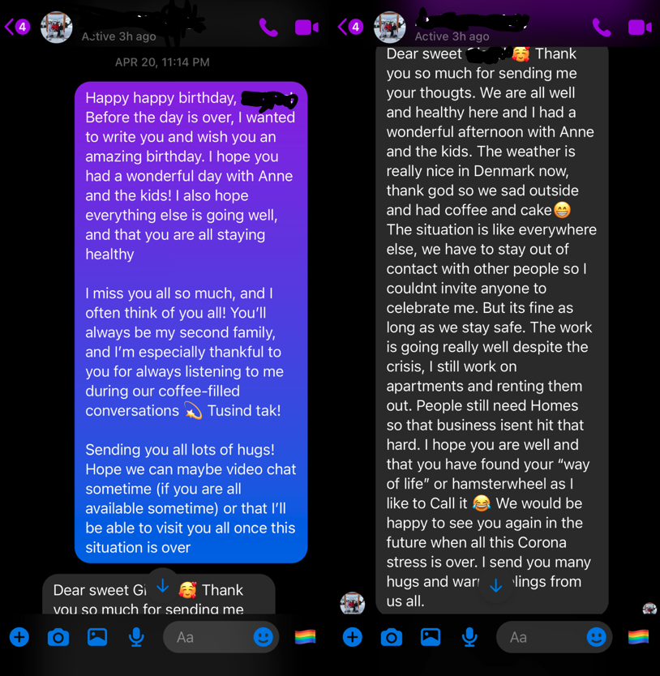

Screenshot of a Facebook Messenger Conversation dated April 20, 2020; taken on an iPhone X
From L.A. to Copenhagen in an Instant
This screenshot -- or digital image that captures the contents of a computer or mobile phone display at a specific moment in time -- of a Facebook Messenger conversation between a Danish man and his former American host student -- an exchange student of high school or college age, who lives in a new country and stays with a local family as part of a scholarly exchange -- captures the power of social media as a tool for connectivity and community-building, particularly during unforeseen circumstances.
The Facebook Messenger conversation, which is dated April 20, 2020, occurred nearly a month after Covid-19 was declared a pandemic in the United States.
Despite the travel ban, the nine-hour time difference, and the 5,595 miles that separate Copenhagen, Denmark from Los Angeles, California, Facebook Messenger allowed the individuals in the above-pictured conversation to instantaneously connect during the Covid-19 pandemic. Although they share updates with one another – as they typically would before the pandemic – they also share their individual experiences of the pandemic. Such shared experience of existing during a pandemic fostered a sense of community between the subjects. Ultimately, the exchange captured by the artifact also offers a glimpse into the myriad of Covid-19 experiences around the world.